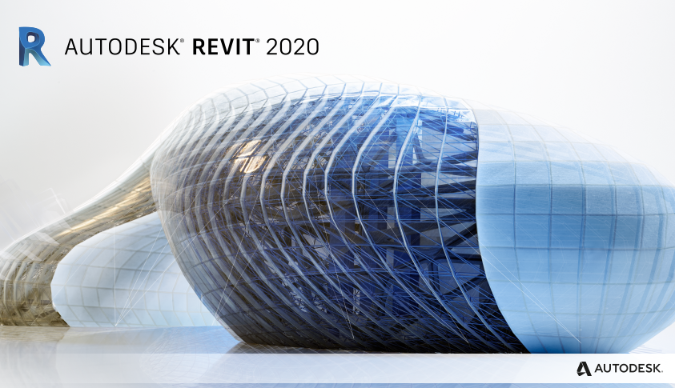

Revit is a software for Building Information Modeling (BIM). The process of BIM includes various tasks for infrastructure projects such as designing, developing, analyzing and communicating the design. BIM models can contain critical information about all aspects of the structure that allows teams to collaborate more efficiently.
1.0 Building Information Modeling
BIM involves the following:
A Shared Model (Multidisciplinary)
Geometric Building Information (3D → 2D all interconnected)
Plans
Sections
Details
Other Building Data (Data that may not be found on 2D drawings)
Schedules
Text
Design Information
Revit is a tool that is used for BIM tasks by modelling in 3D
2.0 Revit Basics
2.1 Families
All model elements belong to family categories which are groups of similar types of objects. Each category has its characteristics (e.g. base-level and top-level that defines height). Some of the family categories found in Revit are:
Walls
Structural Columns
Floors
Structural Framing
2.1.1 Types of Families
Different family categories are one of three types, that determines how they are edited in Revit. These three types are:
System Family
Occupies an area in plan or section with a constant build-up
Component Family
Created and edited in separate files linked into Revit project
In-place Family
One-off, unique items
2.1.2 Further Branching
As mentioned, family categories fall under types of families. Each category is further divided into families (e.g. different walls) then family type. Each of these family types has instances in the model.
Example: Basic Walls
System Family (Type)
Floors (Category)
Walls (Category)
Stacked Wall (Family)
Curtain Wall (Family)
Basic Wall (Family)
200mm Concrete (Type of Basic Wall)
300mm Concrete (Type of Basic Wall)
Brick on metal stud (Type of Basic Wall)
Family Instance
Revit Hierarchy
Type of family → Family Category → Family → Family Type → Family Instance
2.2 Set up a Project
2.2.1 Template Files
Templates (.rte) are commonly used in industry as starting points for any project. Revit has four included templates (each for different disciplines) but these templates are often modified by the firm to fit their standards.
2.2.2 Procedure
Open Revit → File → New → Project
Browse and select template
Manage (tab at top) → Project Information
Project specific information can be updated here
Save the project file (.rvt) with a descriptive name
3.0 Creating the Structure
3.1 Getting Started
Usually, preliminary information is available from other consultants such as the architect. Prior rough plans and section drawings help inform the development of the structural model so that the proposed structure can fulfil its intended functions.
3.1.1 Shared Coordinates
Components in the Revit model can be located using real-world coordinates which provide the structural team with the location of crucial features from the architectural plans.
Coordinate Systems
Revit has two coordinate systems:
Survey Base Point
Represents a known position in the real-world
Provides N/S, E/W and Elevation (in units of the project)
Project Base Point
Origin is defined relative to the project
Provides N/S, E/W, Elevation (in units of the project) and angle to true north (project north relative to true north)
This information can be obtained by linking the architectural model to the structural model. This is done by navigating to the Insert tab at the top → Link Revit and the desired positioning according to coordinates can be selected:
If it's needed to acquire the shared coordinates from the architectural model then select Manage (tab at top) → Coordinates → Acquire Coordinates then select the model that was linked:
After acquiring the coordinates, the project base point can be moved by selecting reveal hidden elements in the bottom left toolbar and unclipped to a more convenient location.
3.1.2 Copy / Monitoring Grid and Levels
For the new project, it is ideal to have the same grid in the plan view as the architectural model. The copy/monitor tool in the collaborate tab can be used to copy the gridline from the linked file (Copy → select the gridlines → Finish).
Copy/Monitor tool in use
The same can be done for the levels in an elevation view. If it is required to offset the levels being copied this is done by selecting options in the copy/monitor tool and entering the desired amount.
Halftone can be done to the linked model in every view separately: vv (on keyboard) → Revit links → Halftone
Plan views can be added for the levels by going to the View tab → Plan Views → Structural Plan:
3.2 Columns
Revit has two different types of columns. Columns (architectural columns) used for decorative applications and boxing out locations. Structural columns are the load-bearing elements in the model. This can be created by navigating to Structure (tab at top) → Column:
The height/depth of the column from the plan view is set using the green bar at the top by either specifying another level or a numeric height:
The type of column is selected from the properties panel and new column families can be imported in (Load Family) from Revit's content library:
Another modified type of column can be added to the Concrete Square family by clicking Edit Type (see in the image above) → Duplicate → then changing to the desired dimensions. To quickly place all columns at the grid intersection point the At Grids option can be used.
First story structural columns
To modify the columns at the gridlines that have more than one story, going to the plan view and selecting the series of columns that are subject to change can allow for fast, efficient modifications. The copy and paste tools can be used to align each new extension of columns with the desired levels. The properties tab can be modified (offset) to stretch the columns to fit the floor height.
Section View
In the structure above, the fourth floor and the fifth floor require steel columns. This is simply done by changing the type in the properties panel.
Steel columns added after completion of lower structure
Revit also has a slanted columns option which allows drawing of the members from the plan view by defining the start and ending levels:
Slanted columns added after completion of lower structure
3.3 Beams
To place beams in the Revit model, the steps are similar to placing columns. Go to Structure (Tab at the top) → Beam then modify the type as done for columns. The At Grids option can be used again for each plan view (at the various levels) for the beams to connect all the columns.
Plan View
Diagonal beams are easier to add in the 3D view. The view can be changed from wireframe to hidden line on the bottom left toolbar and then the beam tool is used with 3D snapping turned on (the green ribbon).
Basic geometry of structure before changing details
Steel beams are added to the upper two floors, after completion of the lower structure, in the same way. Then the beams systems tool (in structure tab) can be used to insert secondary beams at the desired spacing.
Beam systems inserted on top two floors
Additionally, the beam tool is used to create the rakers and trusses for the seating. Then they are copied (hotkey C-O) along the structure.
Rakers and truss added to model
3.4 Walls
Like columns and beams, the wall tool can be selected from the structure panel. Then, the type can be selected as done before. One key difference between beams/columns and walls is that walls are system families. This also means new families can not be loaded in with the load family tool. Therefore, if required to edit wall properties, the edit type option can be used to duplicate and change properties. The edit button beside Structure (seen in the image below) will allow the modification of materials and thickness.
Edit Type Option
The placement of the walls is done by drawing them onto a plan view with the height specified. The location line can be changed in the properties panel (wall centerline, finish face etc.) to help with precision when drawing the walls. The wall can be extended to other floors similar to the columns by using the copy tool and ensuring offset to the next level is set to 0.0.
Created Walls
The same process can be repeated to add more walls and beams are drawn in to connect the walls to the structure.
Walls Completed
3.5 Footings
When adding footings to the model, the columns and walls must be considered separately. The required tools for these additions are also found through the structure tab:
Isolated and Wall seen on the rigiht
From the plan view at the ground level, the walls and columns are selected for footings to be added. All the walls and columns can more efficiently be selected (use filter option to select each separately) and offset (extended) below ground level to move foundations down.
Footings in Place
3.6 Floor Slabs
Floor slabs are added for each of the levels. This tool like the previous components can be found in the structures tab.
The floor boundary is created using the drawing tool seen in the image below. Align (hotkeys A-L) and trim (hotkeys T-R) can be used to faster draw the floor slab boundaries.
A global parameter (a dimension assigned to a variable) can represent the slab thickness if beams (e.g. steel beams) need to be offset because of the floor. This is done to be more efficient when changes occur.
Floor slabs added to lower structureFloor slabs (metal deck with concrete topping) added to upper structure
3.7 Bracing
Braces are added to the structure by editing in section views and the 3D view (section boxes). The brace tool is also found under the structure tab.
Bracing drawn on sectionCompleted interior bracing
3.8 Bleachers (In-place Families)
The bleachers are a unique component to this project thus will be modelled inside the project file as an in-place family component. The required tool is found in the structure tab. This new piece can then be converted to a component family if required.
Option seen highlighted on leftBleachers added to model
4.0 Structure Detailing
4.1 Materials
After the geometry of the structure is in place, the material assignment can be done. For instance, right-click on a beam in the 3D view and then press Select All Instances → In Entire Project. This can be repeated for other parts of the structure. The floor slab, however, provides us with type properties in the properties panel, to change the material press Edit Type → Structure and this will change all the slabs of the same type. If needed to join components together, the join tool can be used after changing to the same materials. The materials are changed in the window seen in the picture below:
4.2 Creating Plan Views and Sheets
Plan views can be created by navigating to the View tab → Plan Views → Structural Plan. All of the plans can be selected to create new, publishable versions:
Each view can be modified to look more presentable. The sheet can then be created by selecting Sheet from the view tab and the view is dragged on from the sidebar:
Annotations are added by going to Annotate tab → Tag All or Tag by Category.
Sample Sheet
5.0 Schedules
Schedules are another important part of the BIM model. They allow for easy counting of the numerous members, volume computations (e.g. of concrete) and much more.
5.1 Making a Schedule
The schedule option is found under the View tab. After pressing schedule, select Schedule/Quantities from the drop-down menu to get the following window:
From this window, a schedule can be created for any category. The columns of the schedule are chosen after the selection of the category. The following is an example of a schedule for the structural framing category:
Members can be modified (change type etc.) in the schedule instead of the various visual views. Calculations can also be performed based on schedule values.
5.2 Sorting, Grouping and Filtering
The sorting/grouping option is accessed from the properties panel. Then the data can be sorted easily by using the options seen in the picture below:
Grouping and total options
The filter option is also found on the properties panel. This option presents many ways the data in the schedule can be filtered.
Filter
6.0 Design Options
The design options tool allows the designer to have multiple options embedded in the BIM model. This is found in the Manage tab → Design options.
Create options in this window
Components are added to one of the option sets and then the same components can be modified in other options. This enables the efficient production of drawings that present different design alternatives.
Select components then assign them to option set
7.0 Final Model
The stadium model produced based on the tutorial is presented in the images below.
{kind=link}